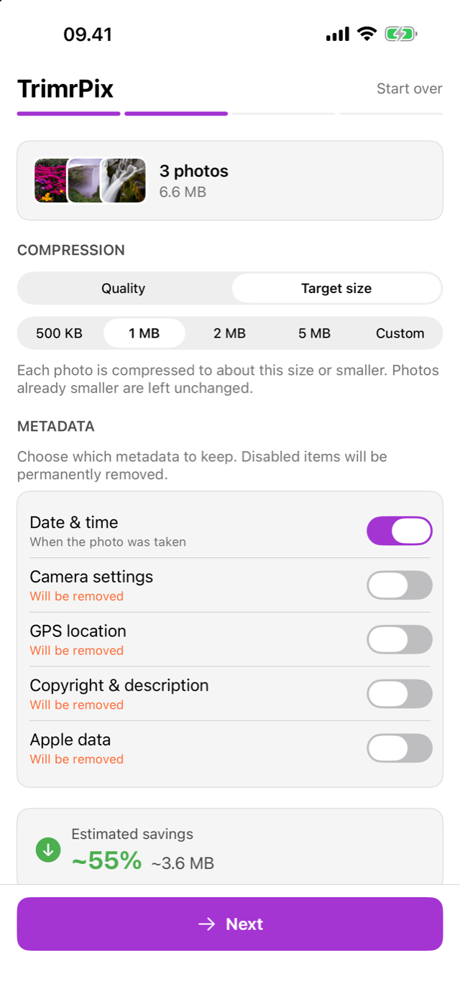

Smaller photos.
No duplicates.
TrimrPix compresses the photos already in your library and puts them back where they were. Nothing to tidy up afterwards.
Download on the App Store$1.99 · Pay once · Requires iOS 17 or later

Features
Everything you need. Nothing you don't.
I built TrimrPix to do one thing well: make your photo files smaller. No bloat, no upsells, no nonsense.
In-place replacement
Originals are replaced directly in your Photos library, so there is no duplicate album to clean up later. Other compressors can't do this.
Target a file size
Get every photo under a size you pick: 500 KB, 1 MB, 2 MB, 5 MB, or an exact size you type in. TrimrPix dials in the quality to hit it.
3 quality levels
Choose Same for nearly lossless, Good for a balanced reduction, or Smaller for maximum savings.
4 formats supported
JPEG, PNG, WebP, and HEIC. Each photo is compressed in its original format and put right back in place.
Granular metadata control
Keep date and time, strip GPS location, remove camera data. You decide what stays, per category.
Savings estimate
See exactly how much space you'll save, as a percentage and in megabytes, before committing to anything.
iCloud compatible
Works with photos stored in iCloud. They're downloaded, compressed, and saved back automatically.
How it works
Four screens, start to finish.
No sign-up, no tutorial needed. Open the app and you're compressing in under a minute.

1Select
Pick one photo or many, straight from your library.

2Configure
Choose a quality level or a target size, and which metadata to keep.

3Confirm
Check the summary, then slide to compress. Nothing changes before that.

4Done
See what you saved, this run and in total over time.
Stop deleting memories to free up space
Compress your photos instead. TrimrPix takes seconds and you keep every single photo.
Download on the App StoreGuides
Answers to the reason you're here
Short, honest write-ups for the three things people are usually trying to do, including what the iPhone can already manage on its own.
FAQ
Frequently asked questions
What image formats does TrimrPix support?
JPEG, PNG, WebP, and HEIC. TrimrPix compresses each photo and keeps it in its original format (a HEIC stays HEIC, a PNG stays PNG), so it slots straight back into your library in place.
Can I compress to a specific file size?
Yes. Switch to Target size mode and pick 500 KB, 1 MB, 2 MB, 5 MB, or type an exact size of your own. TrimrPix finds the highest quality that keeps each photo under it. Photos already smaller than your target are left untouched.
How much space can I actually save?
Typically 30–80%, depending on your photos and the quality level you choose. TrimrPix shows you the estimated savings before you commit, so you always know what you're getting.
Does TrimrPix work without internet?
Yes, 100% offline. Every bit of compression happens on your iPhone. No servers, no cloud, no data leaves your device. That's the whole point. I built it this way because your photos are nobody else's business.
What happens to my original photos?
They're replaced in-place with the smaller version. No duplicates clogging your library. This can't be undone, which is why TrimrPix shows a clear summary and requires a slide-to-confirm gesture before compressing.
Does it work with iCloud Photos?
Yes. If a photo is stored in iCloud, TrimrPix downloads it automatically, compresses it, and saves the result back. You don't have to do anything extra.
Can I control what metadata is kept or removed?
Yes. You choose exactly which metadata categories to keep: date/time, GPS location, camera settings, copyright info, and Apple data. Want to strip GPS from every photo? Just toggle it off.